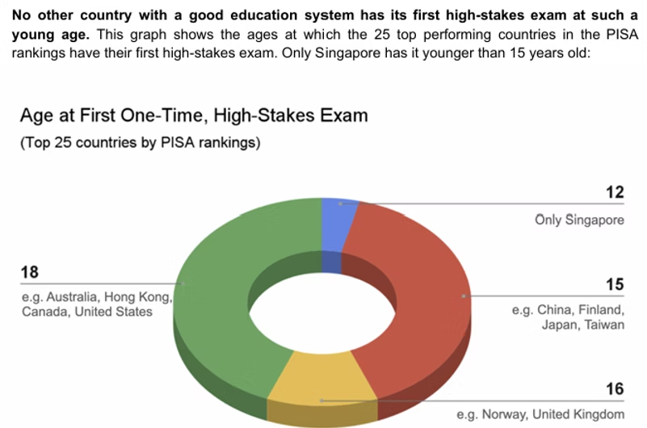
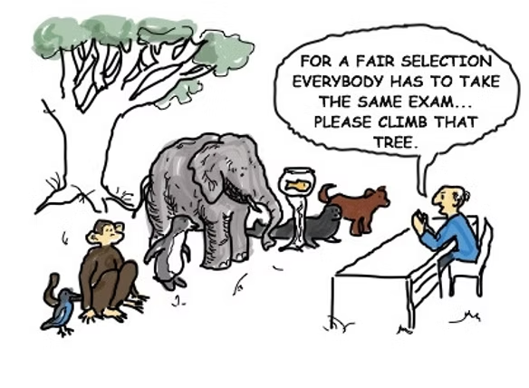
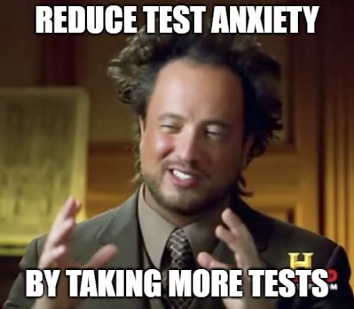

On Exams
At the Redesigning Pedagogy International Conference at the National Institute of Education, Singapore, I submitted a question during the fireside chat.
“What is one thing you think we should REMOVE from education?”
Their answer was instinctive and unanimous. All these panelists, these world-renowned education experts, they all yelled “EXAMS!”
“EXAMS!”
Singapore is widely regarded as a highly competitive society. The earliest standardized examination, the PSLE, occurs as early as Grade 6. According to EveryChild.SG's White Paper: Education Reform, and I quote, “No other country with a good education system has its first high-stakes exam at such a young age.”

All of this made me curious about the nature of exams. If people generally dread them, why are exams still here, and what value do they still serve?
WHY ARE EXAMS STILL HERE?
Perhaps the answer back then was efficiency. During the Industrial Revolution, society needed quick ways to gauge how competent a person is. What better way than to put a bunch of them in a room, give them a standardized test, and see who performs the best? And then, rinse and repeat with a different subject and difficulty level. Exams are a clear 'benchmark' to segregate levels of progress.
Perhaps the answer today is... familiarity? Having administered exams for so many decades, it is mostly regarded as the norm to assess competence (although there are countries that state otherwise, which we will discuss later).
And yet, test anxiety is on the rise, and high levels are unanimously linked to poorer academic performance. Ironic huh? We are anxious to perform well on tests, but most of the time, it's our anxiety that makes us perform worse! More than that, we end up fixating more on getting a good score on the exam. We ask our teachers if “this will be on the exam,” and if they do not say yes, we never pay the topic a second glance.
What happened to learning for the sake of learning, of discovering something new and mastering a concept or skill?
WHAT VALUE DO THEY STILL SERVE?
More than that, does performing well on a test indicate success? Does performing well on a test demonstrate your ability to be a functioning member of society? Or does it just show just that: that performing well on a test means… we can perform well on a test?
There is a saying that if you judge a fish by its ability to climb a tree, it will spend the rest of its life believing it is stupid.

To be perfectly honest (and probably unpopular opinion), I like tests. Yes, I faced a lot of test anxiety when I was younger, but I can actually perform well in these standardized examinations. I thrive quite well in the current education system, and... I like school! (Otherwise, I wouldn't be in school doing my PhD).
But I am just fortunate enough not to be the fish asked to climb a tree.
So if not exams... then what?
So if not exams... then what? There must be some measure of competency! I am not suggesting fully getting rid of tests, but perhaps trying to alter the mindset around tests. We can use them in other ways, as ways to learn or identify knowledge gaps, instead of these end-of-semester monsters we have learned to fear. We can have lots of mini-tests throughout the year, some sort of exposure therapy towards tests!

Other countries have gone by the motto 'less is more', such as Finland, which yields top scorers, yet children under seven receive mandatory unstructured play and little homework. Teachers conduct daily assessments and personalized instruction, with scarcely any standardized tests.
Ultimately, the discussion is far from over. There are a LOT of other considerations I did not mention in this article, and I am far from having all the answers, but I hope that by raising these questions, I can get you to think about our education system as a whole.
Our world is rapidly evolving; shouldn't education rapidly evolve with it, too?